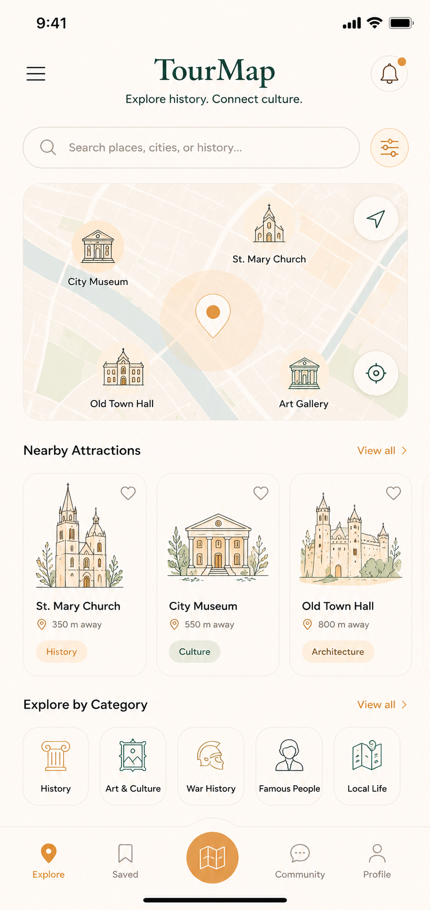
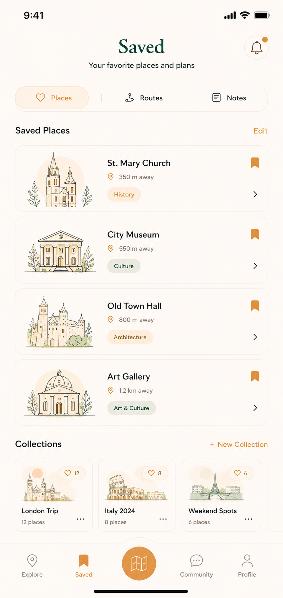
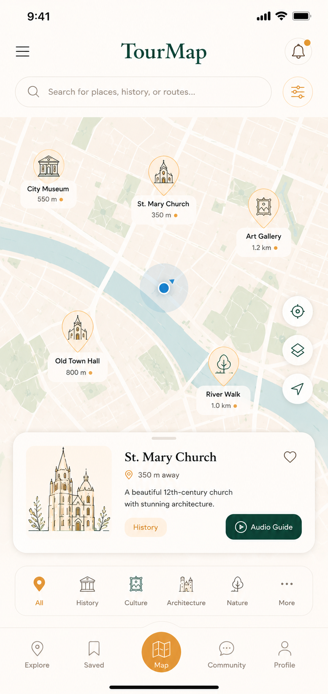
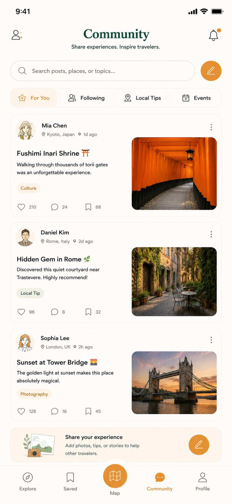
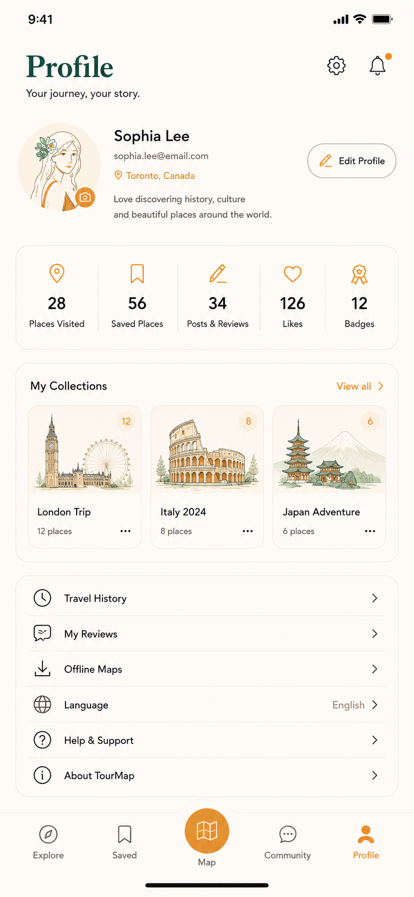

UI/UX Design / Mobile App Concept
TourMap is a GPS-based mobile application designed to enhance historical and cultural tourism. By combining location-based services with multimedia content, the app helps users discover nearby historical landmarks, museums, cultural attractions, and local stories while exploring a city.
TourMap includes five main screens that support the full user journey: exploring nearby attractions, viewing saved places, using the map, joining community discussions, and managing the user profile.





This poster presents the concept, target users, key functionalities, user motivations, and potential barriers of TourMap. The project explores how digital technologies can support cultural tourism through location-aware experiences and interactive content.
TourMap was developed to help travellers discover local history and culture through a location-based mobile experience. The concept was inspired by theories of augmented space and digital cultural engagement.